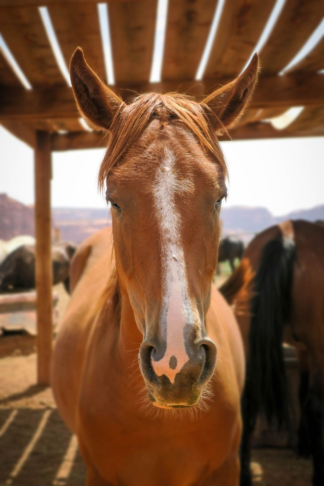
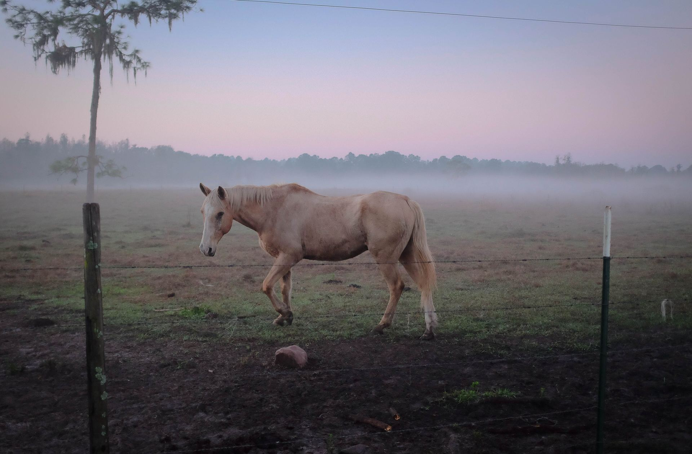

About T.S Essentials
Trained hands and a horse-first approach
T.S Essentials grew out of six years of hands-on work in the equine bodywork industry. I learned and worked under Jeffra Sinclair, a holistic practitioner in Eustis, Florida, and her mentorship shaped the way I approach every horse: patiently, thoroughly, and with the horse’s comfort as the measure of success.
My title is equine sports massage therapist, but my work goes well beyond massage. Positional release is the foundation of my practice, supported by sports massage, structural alignment, and aromatherapy. I combine these techniques according to what each horse needs on the day, an approach known as modality stacking.
I work with horses of all ages and disciplines, from performance horses in regular competition to trail horses, seniors, and young horses starting their careers.
At a glance
- Six years in the equine bodywork industry
- Trained and mentored by Jeffra Sinclair
- Equine sports massage therapist
- Based in Eustis, Lake County, Florida
My commitment
What you can expect
- The horse leads
- I watch your horse’s responses throughout, and I change course or stop if they are not comfortable.
- Clear communication
- You’ll know what I found, what I did, and why.
- Respect for your veterinarian
- My work supports veterinary care. I refer to your vet whenever something needs their attention.
- No pressure
- I’ll recommend a plan, but how often your horse is seen is always your decision.

Book a session
Ready to schedule a session?
I’m based in Eustis, Florida. Reach out to check availability for your barn and to book your horse’s first visit.